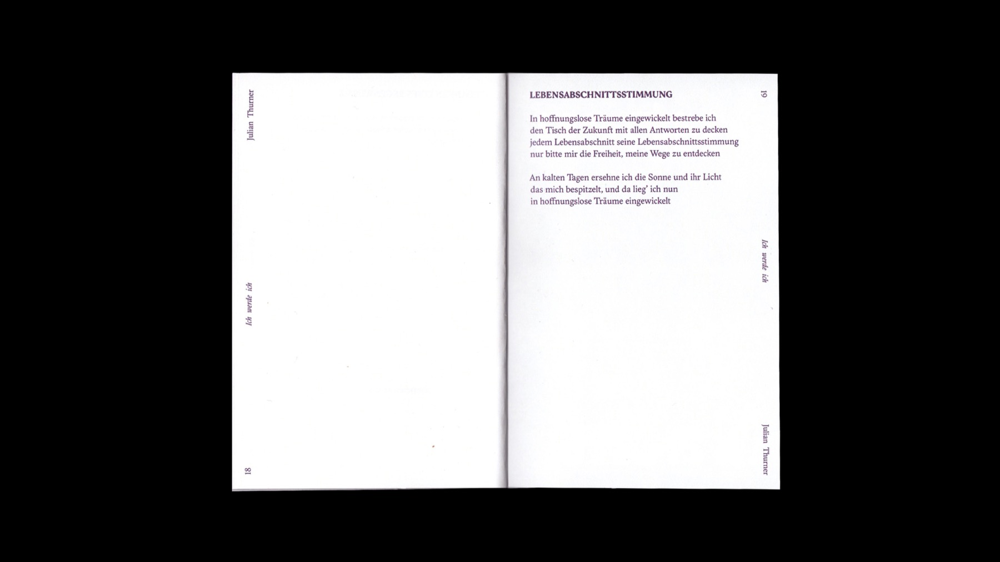

Ich werde Ich
Ein gemeinschaftlicher Gedichtband über das Ich im Werden — mit Texten von Julian Thurner, Camilla Cadeggianini, Luisa Riegler, Lukas Kuhl, Julija Torjanika, Clara Kogler und Marcin Hentsch. Gestaltung: Julian Thurner.

